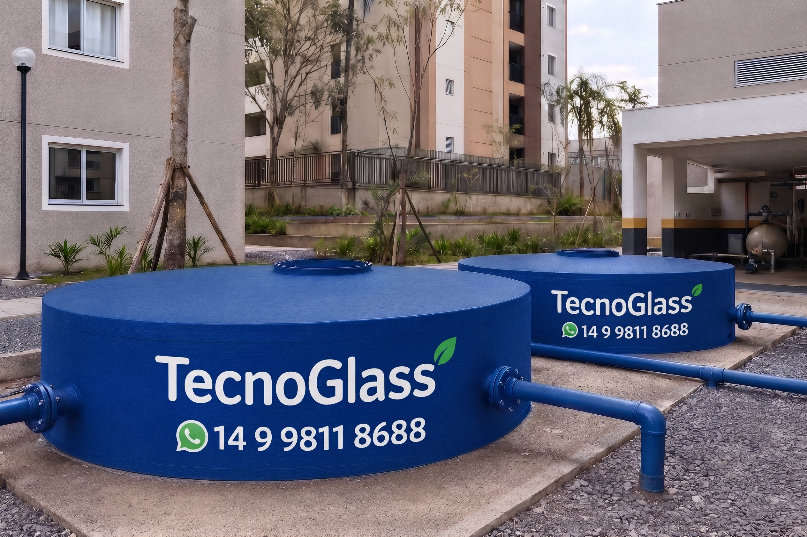
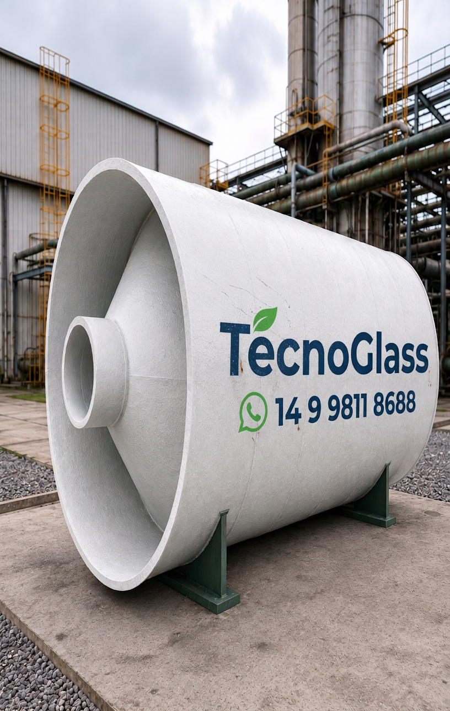
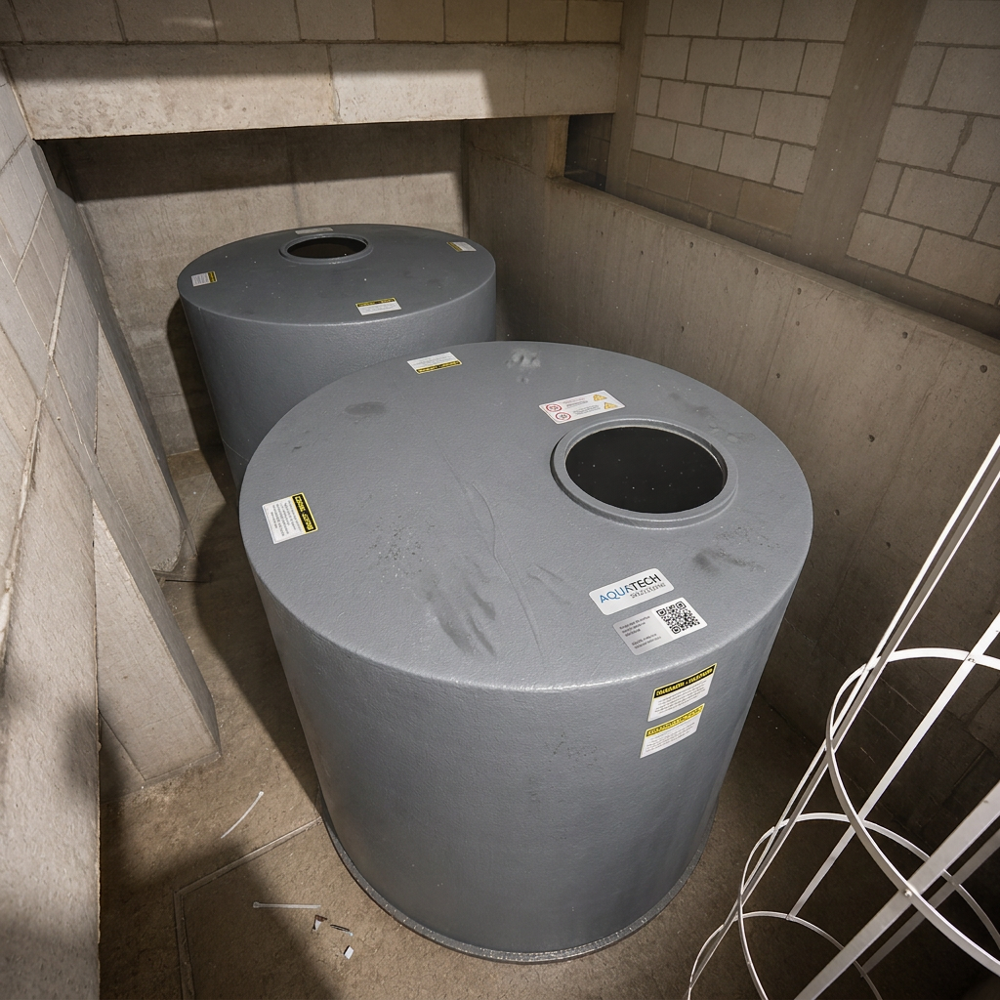

Diagnóstico antes da intervenção
Analisamos o dano, o histórico de uso e o ambiente de operação antes de propor o reparo.
Mais de 30 anos de experiência em reparo e reforço de PRFV
Fazemos diagnóstico técnico, reforma de tanques, instalação e reforço de flanges, reforço estrutural e laminação de tubos, com controle de qualidade, para evitar falhas e paradas e estender a vida útil do equipamento que você já tem.
Atendemos indústria, saneamento, condomínios, agronegócio e infraestrutura que precisam manter seus equipamentos operando com segurança.
Precisa de um reservatório novo? Conheça nossa linha completa de PRFV →
Reparo com critério técnico
Avaliamos o estado real do tanque, flange, estrutura ou tubulação antes de recomendar reparo, reforço ou substituição. Assim você evita gastos desnecessários e intervenções mal dimensionadas.
Analisamos o dano, o histórico de uso e o ambiente de operação antes de propor o reparo.
Laminação, reforço e instalação feitos com critérios técnicos e conferência das medidas.
A mesma equipe que fabrica reservatórios também reforma, reforça e recupera equipamentos em campo.
Intervenção planejada para reduzir impacto na operação de obras, indústrias e sistemas prediais.
Reparar ou substituir?
Trinca superficial, vazamento em flange, perda de espessura e dano estrutural pedem soluções diferentes. Nós ajudamos a identificar o que pode ser recuperado com segurança e o que realmente precisa ser substituído, porque um reparo mal feito volta a falhar e gera nova parada.
Esses pontos ajudam a identificar se o equipamento pode ser reparado ou precisa ser substituído.
Serviços em PRFV
Cada intervenção parte da análise do equipamento e da operação, sem substituir o que ainda pode ser recuperado com segurança.

Recuperação de tanques em PRFV com perda de espessura, desgaste superficial ou necessidade de adequação técnica.
Benefício técnico: prolonga a vida útil sem substituição integral. Solicitar este serviço
Instalação técnica de flanges em equipamentos e tubulações em PRFV, com vedação e alinhamento adequados à operação.
Benefício técnico: conexões dimensionadas para a pressão e o fluido operado. Solicitar este serviço
Reforço de paredes, base e pontos críticos de tanques e estruturas em PRFV sujeitos a maior carga ou desgaste.
Benefício técnico: restaura resistência mecânica em pontos comprometidos. Solicitar este serviço
Reforço de flanges existentes com sinais de fadiga, vazamento ou necessidade de maior resistência à pressão de operação.
Benefício técnico: reduz risco de vazamento em pontos de conexão. Solicitar este serviço
Laminação técnica de tubulações em PRFV para recuperar estanqueidade e resistência mecânica ao longo da linha.
Benefício técnico: intervenção pontual sem troca da tubulação completa. Solicitar este serviço
Avaliação do equipamento em campo ou por fotos e dados para indicar se o caso é de reparo, reforço ou substituição.
Benefício técnico: decisão baseada em análise, não em suposição. Solicitar este serviçoPor que reparar em PRFV?
Quando o dano é bem diagnosticado, o reparo em fibra de vidro devolve resistência mecânica e estanqueidade, normalmente com custo e prazo menores que os de uma substituição completa, e mantém a segurança da operação.
Falar com um especialista em reparo de PRFVReforço e laminação dimensionados para o ponto e a carga real de operação.
O PRFV não enferruja: as camadas de reforço mantêm a proteção contra ambientes úmidos e agressivos.
Alternativa técnica viável quando o dano é localizado e o restante da estrutura está íntegro.
Intervenção mais rápida que a fabricação e instalação de um equipamento novo.
Equipamento recuperado volta a operar com prazo estendido de uso seguro.
Execução orientada por critérios técnicos e controle dimensional, como na fabricação nova.
Diferenciais TecnoGlass
Do diagnóstico à entrega, reunimos as informações do equipamento, do dano e da operação para recomendar a intervenção certa: reparo, reforço ou substituição.
Avaliação em campo ou remota, por fotos e dados do equipamento, antes de propor a intervenção.
Atuação consolidada em fabricação e reparo de fibra de vidro para diversos setores técnicos.
Reforma de tanques, instalação de flanges, reforço estrutural, reforço de flanges e laminação de tubos.
Apoio para entender o dano, o ambiente de operação, a urgência e o histórico do equipamento.
Indústria, saneamento, condomínios, agronegócio, alimentos, bebidas e infraestrutura.
Intervenção planejada para reduzir o impacto do reparo na operação em curso.
Reparo executado com os mesmos critérios técnicos aplicados à fabricação de um equipamento novo.
Prolongar a vida útil do equipamento existente reduz descarte e uso desnecessário de recursos.
Onde a TecnoGlass repara
Cada setor tem uma urgência e um risco diferentes quando um equipamento falha. Por isso atendemos engenharia, manutenção e responsáveis técnicos com diagnóstico e reparo sob medida para a realidade da operação.

Reforma e reforço de tanques e tubulações que não podem ficar fora de operação por muito tempo.
Recuperação de reatores, decantadores e reservatórios expostos a ambientes corrosivos.
Reforma de reservatórios prediais com sinais de desgaste, vazamento ou necessidade de reforço.
Reparo de estruturas em fazendas e propriedades onde a substituição imediata é inviável.
Recuperação de equipamentos que exigem material limpo, resistente e conforme ao processo.
Manutenção de reservatórios e estruturas técnicas com prazo e orçamento limitados.
Intervenções realizadas
Registros de intervenções técnicas em tanques, tubulações e estruturas em PRFV.
Como funciona
Problema, idade do equipamento, ambiente de operação e urgência.
Avaliamos o dano e indicamos reparo, reforço ou substituição.
Intervenção adequada ao dano e ao prazo disponível.
Executamos conforme a especificação e devolvemos o equipamento pronto para uso.
Contato técnico
Envie fotos e informações do equipamento. Nossa equipe técnica avalia o dano, o ambiente de operação e a melhor intervenção antes de retornar o contato.
Atendemos todo o território nacional.